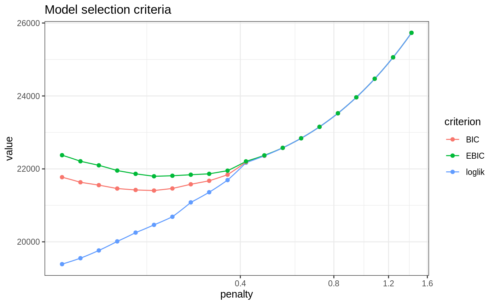
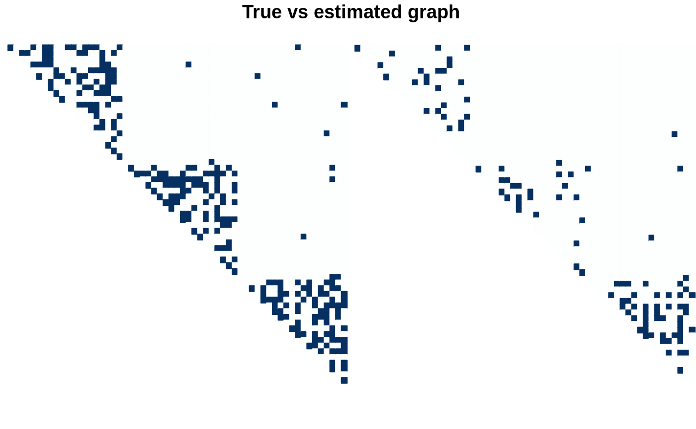

janine_SBM.RmdWe use the package rggm to draw hopefully realistic Gaussian multivariate data faithful to the graphical model of an underlying stochastic bloc model (SBM).
We first set some parameters to define an SBM:
nNodes <- 60 blockProp <- c(1/3, 1/3, 1/3) # group proportions nbBlock <- length(blockProp) # number of blocks connectParam <- diag(.4, nbBlock) + 0.01 # connectivity matrix: affiliation network
The network itself is then sampled:
mySBM <- rSBM(nNodes, connectParam, blockProp)
From this network we build a signed precision matrix
Omega <- graph2prec(mySBM, cond_var = rep(1, nNodes), neg_prop = 0.5) Sigma <- solve(Omega)
We can finally sample some multivariate Gaussian data.
n <- 300 means <- rep(0, ncol(Sigma)) X <- rmgaussian(n, means, Sigma)
Janine (a reference to the Simone package, from which Janine is a reload/remake), specially targeting GGM inference with underlying blockwise pattern governed by an SBM. The inference alternate adaptive graphical-LASSO and SBM with variational EM. The weigths in the graphical-Lasso are
where \(\hat{\mathcal{G}}\) is the current estimate of the network and \(\hat{\mathbb{P}}(i \leftrightarrow j)\) is the estimated probability of connection between any dyad under the fitted SBM (that is, conditional on the block of the nodes).
The overall amount of sparsity is tuned by the argument penalties, and the number of blocks in the SBM is fixed by argument n_blocks. By default, janine is fitted on a vector of penalties automaticcaly generated.
fits <- janine(X, # alpha = 0.1, control_optim = list(n_cores = 1), control_penalties = list(min_ratio = 0.075))
In this setting, the criteria looks good but probably need to be adapted cause they choose a too sparse model
plot(fits)

The estimation is visually good too if we consider the more dense model, so we need to think a bit more about the model selection issue.
model_BIC <- select_model(fits, "BIC")
par(mfrow = c(2,2)) corrplot(as.matrix(Omega), is.corr = FALSE, tl.pos = "n", method = 'color', type = "upper", diag = FALSE, title = "TRUE precision") corrplot(as.matrix(Sigma), is.corr = FALSE, tl.pos = "n", method = 'color', type = "upper", diag = FALSE, title = "TRUE variance") plot(model_BIC, type = "precision", title = "Estimated precision") plot(model_BIC, type = "covariance", title = "Estimated covariance")
